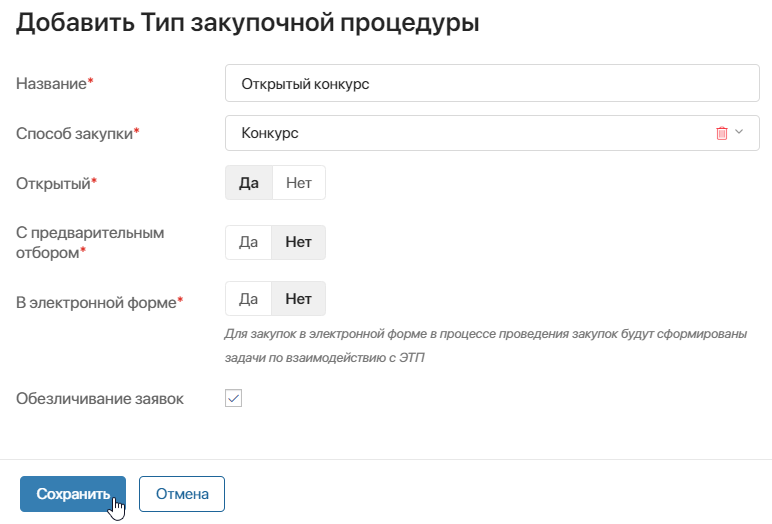

Для проведения закупочных процедур, оформления заказов и работы с поставщиками применяются данные из справочников — служебных приложений, в которых хранится вспомогательная информация. Перед началом работы с ELMA365 Закупки необходимо заполнить используемые справочники.
В некоторые справочники могут добавлять данные только пользователи, включённые в группу Администраторы, другие доступны всем пользователям. Администраторы системы могут предоставлять и ограничивать права на создание элементов в приложениях в зависимости от регламентов компании.
О том, как вносить данные, читайте в разделе «Как добавить данные в справочник».
Системные приложения
Для работы бизнес-решения Закупки используются данные из некоторых приложений, настроенных в системе по умолчанию. Убедитесь, что информация внесена в следующие системные приложения:
- системный справочник Мои юридические лица — применяется для указания юридических лиц вашей компании при создании заявок на закупку. По умолчанию создавать юридические лица могут только администраторы системы;
- приложение Компании из системного раздела CRM — используется в карточках поставщиков и служит для получения их контактных данных.
Рассмотрим справочники, настроенные в разделах решения Закупки.
Раздел «Закупки — справочники»
По умолчанию вносить данные в раздел Закупки — справочники могут только администраторы системы, но они могут предоставить права на создание элементов уполномоченным сотрудникам.
Заполните справочники:
- Направление закупки — укажите по каждому направлению сотрудника, которому потребности направятся на первом этапе согласования, а также ответственного за аккредитацию поставщиков;
- Номенклатура, Единицы измерения, Основания потребностей, Валюты, Типы закупочных процедур, Электронные площадки, Адреса — внесите в приложения данные в соответствии со стандартами вашей компании. Коды номенклатур и единиц измерения могут подтягиваться из классификаторов ОКПД2 и ОКЕИ, если при первичной настройке решения настроено автоматическое заполнение данных;
- Критерии определения победителя — добавьте критерии оценки участников конкурентных закупок и установите для них вес в процентах. Также укажите, для каких типов закупочных процедур они используются. Обратите внимание, общий вес всех критериев, используемых для типа процедуры, должен составлять 100%;
- Профили инициаторов — для каждого сотрудника, который будет оформлять заявки на закупку, нужно создать профиль инициатора закупок. Профили нужны для корректного заполнения данных о юридическом лице, ЦФО, бюджете и т. д. в карточке заявки.
По умолчанию профили добавляются только для внутренних пользователей. При подключении решения Портал закупок также нужно создать профили для внешних пользователей, которые будут оформлять заявки на портале.
Для создания профиля выберите пользователя и заполните его данные. После сохранения запустится бизнес-процесс, в ходе которого:
- для внутреннего пользователя активируется профиль инициатора. Сотрудник сможет создавать заявки на закупку в разделе Потребности;
- внешнему пользователю автоматически отправится электронное письмо со ссылкой-приглашением. Он сможет подтвердить регистрацию и войти на портал закупок для создания и отслеживания заявок. Если при отправке письма на электронную почту возникнет ошибка, сотруднику, который добавил профиль, назначится задача передать пользователю ссылку‑приглашение вручную.
- Матрица согласования — выберите согласующих для различных групп заявок в зависимости от их суммы;
- Сроки проведения закупок — укажите среднее время разных этапов закупочной процедуры для каждого типа и направления закупки. Данные значения используются для расчёта плановых сроков выполнения задач по процессам;
- Настройки работы по закупочной процедуре — укажите ответственных за разные этапы проведения закупочной процедуры для каждого типа и направления закупки. Эти значения используются для постановки задач по процессам. Если настройки не будут указаны на начальном этапе, то в ходе исполнения процесса администратору будет поставлена задача заполнить этот справочник.
Раздел «Бюджетирование»
Заполнение справочников раздела Бюджетирование требуется, если работа с ним включена при первичной настройке решения Закупки. По умолчанию внесение информации доступно всем пользователям.
В разделе хранится информация о распределении средств по бюджетам. Она используется для резервирования средств по заявкам на закупку, фиксирования списаний при оплате заказов и т. д.
Заполните следующие справочники:
- ЦФО — задайте центры финансовой ответственности компании. Вы можете связать их с юридическими лицами компании;
- Бюджеты — создайте бюджеты для ЦФО;
- Статьи бюджета — разбейте бюджеты по статьям, укажите их баланс и плановые траты на выбранный период;
- Лимиты — укажите лимиты затрат на закупку для бюджета.
Раздел Бюджетирование также включает приложения Заявки, Операции и Резервы. Их не нужно заполнять, так как данные в них записываются в ходе работы с бизнес‑решением.
Раздел «SRM»
По умолчанию добавлять данные в справочники раздела SRM могут все пользователи. Раздел используется для хранения информации о поставщиках, которые участвуют в закупочных процедурах и исполняют заказы. Он позволяет проводить проверки и аккредитации поставщиков, а также присваивать им рейтинг, чтобы работать только с надёжными контрагентами. Кроме того, в разделе настроена обработка документов по заказам.
Внесите данные в приложения:
- Поставщики — добавьте контрагентов, с которыми работает компания. Карточки поставщиков связываются с карточками компаний из системного раздела CRM;
- Сегментация — добавьте сегменты для фильтрации поставщиков по размеру, географии и коммерческим условиям;
- Факторы риска — добавьте факторы, на основе которых ответственный будет оценивать поставщиков в ходе проверок. Например, соблюдение сроков поставок, качество товаров, репутация на рынке и т. п.;
- Анкеты — добавьте анкеты, которые можно отправлять поставщику в ходе проверки или аккредитации. Вы можете прикрепить готовый файл или составить анкету, используя справочник Вопросы. На основе выбранных вопросов сгенерируется файл в формате .pdf;
- Вопросы — используются для формирования анкет. Общие вопросы можно включить в любую анкету, специальные — в анкету для поставщиков по определённому направлению закупки или сегменту;
- Типы документов — укажите виды документов, которые ответственные смогут запросить у поставщика в ходе проверки или аккредитации;
- Прайс-лист — внесите данные об имеющихся предложений от контрагентов. На их основе при оформлении заказов по потребностям будут рекомендоваться поставщики;
- Факторы изменения рейтинга — добавьте факторы, на основании которых может изменяться рейтинг поставщика. Он формируется с помощью оценок, выставленных в ходе бизнес-процессов с помощью специальных блоков, или вручную в приложении Изменение рейтинга поставщика. Например, при несвоевременной доставке рейтинг может снижаться, а при хорошем качестве товара — расти. В поле Изменение рейтинга* введите значение в зависимости от способа расчёта рейтинга, выбранного при первичной настройке решения Закупки:
- Среднее — введите значение по стобалльной шкале, которое будет учитываться для расчёта среднего. Например, для повышения рейтинга введите 100, для понижения — 50;
- Сумма — введите значение, которое будет прибавляться к текущему рейтингу или вычитаться из него, например, 10 или -10.
Раздел SRM также включает приложения Изменения рейтинга поставщика, Заказы поставщикам, Поставки и т. д. В них не нужно вносить данные, так как они заполняются в ходе работы с бизнес-решением. Подробнее читайте в статье «Работа с поставщиками».
Как добавить данные в справочник
Добавить информацию в справочник можно так же, как элементы любого приложения системы.
Откройте страницу справочника и нажмите кнопку создания элемента, например, + Тип закупочной процедуры. В открывшемся окне заполните поля и сохраните запись.

Кроме того, вы можете массово загрузить в справочник данные из файла .xlsx или .csv. Подробнее читайте в статье «Импорт данных».